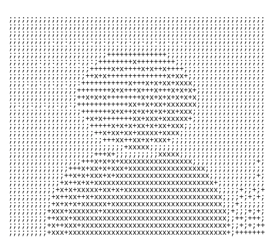

Capture: open in Chrome → Inspect → select the <div id="og"> node →
Cmd+Shift+P → Capture node screenshot → saves exactly 1200×630 → replace
public/img/og.png. Everything outside the black box is screen-only and never captured.